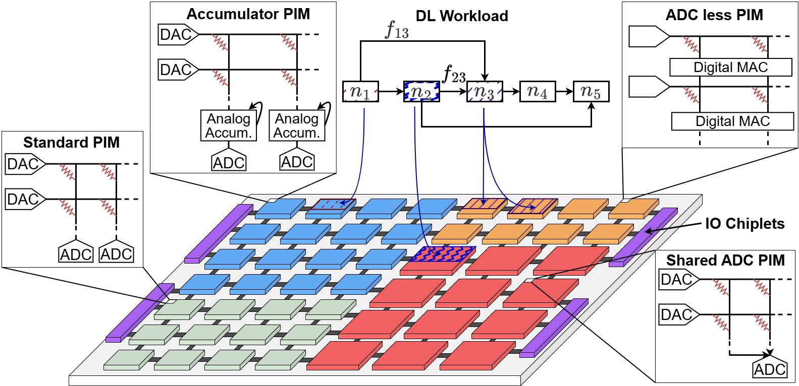
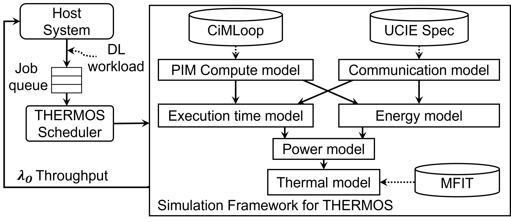

This paper introduces THERMOS, a thermally aware, multi-objective scheduling framework designed for heterogeneous multi-chiplet Processing-In-Memory (PIM) architectures. By integrating various PIM implementations, including ReRAM-based, SRAM-based the framework effectively leverages the strengths of each technology while mitigating their limitations.
The scheduling challenge is tackled using a two-level approach:
Comprehensive evaluations demonstrate that THERMOS significantly outperforms baseline schedulers, achieving up to 89% faster execution and 57% lower energy consumption. This work is the first to deliver a unified RL-based scheduling policy for heterogeneous chiplet systems that is both thermally aware and multi-objective.

The simulation framework in this work is developed to accurately model the performance and energy consumption of deep learning (DL) workloads on PIM architectures. It incorporates two main models:
For a given DL characterization graph (DCG), if two neural layers ni and nj are connected, the volume of data to be communicated is given by fij. The shortest path between the chiplets mapped to ni and nj is determined based on link availability; links along this path are allocated until all activations from ni are transmitted. We assume that chiplets are connected via UCIe ports with the following parameters:
For links connecting different chiplet types, FIFO-based synchronization is employed to handle timing variations. If a chiplet ca (belonging to the scheduling policy ψi) and a chiplet cb (belonging to ψj) are used, and if ca processes an x fraction of the activations fij, then the latency and energy for sending data from ca to cb over the shortest available path are given by:
Here, # hopsa → b denotes the number of hops in the shortest path between chiplets ca and cb. To compute the total communication time and energy between all chiplet pairs mapped to layers ni and nj, we assume that these communications occur in parallel, thus time to transmit data from layers ni and nj is determined by:
For a receiving layer nj, the total communication time and energy are computed by considering that all transmitting layers operate in parallel:
Finally, assuming that layers process activations in a pipelined manner, with each input undergoing a communication-to-compute stage, the overall deterministic latency and energy for I inputs can be approximated using a coarse pipeline (each stage corresponding to a neural layer):
This communication model tracks also link availability over time and allocates energy consumption across all chiplets along the communication path. It captures the deterministic execution time and energy for a given DL workload, although temperature-dependent and non-deterministic effects require runtime thermal model.
Dynamic power the model for each chiplet is derived from both the energy consumption and the execution time. This relationship is crucial for capturing the time-varying nature of thermal behavior during system operation. The thermal dynamics are governed by a discrete-time state-space equation, which can be expressed as:
where T(K) is the temperature vector at time step (10 ms) K, A is the thermal state matrix, B is the power input matrix, and P(K) is the power vector at time step K. The model captures the thermal dynamics of each chiplet and their interactions, allowing for accurate predictions of temperature variations over time.
This simulation framework is fast and accurate, enabling the evaluation of THERMOS across various PIM architectures and workloads. We plan to release the simulation framework along with the THERMOS code to facilitate further research in this area.